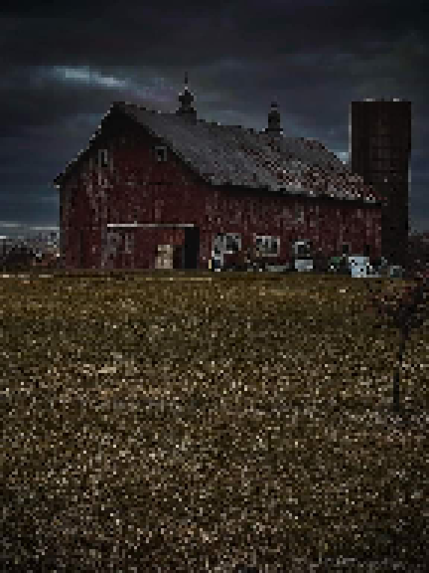

Sem equilíbrio
Você não venceu desta vez.

O ano acaba e você senta na varanda da casa. A fazenda não encontrou o equilíbrio: ou o bolso ficou leve, ou a casa ficou silenciosa. Seu avô avisou: cuidar da terra e das pessoas. Que tal tentar de novo?
Resumo do ano
| Item | Quantidade |
|---|---|
| Fazenda | Desequilibrada |
| Vila | Distante ou sem recursos |
| Bilhete do vovô | Ainda um mistério |